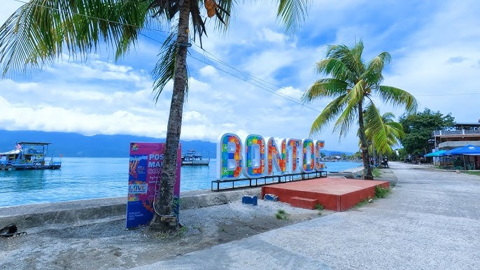

BONTOC TERMINAL

Bontoc Terminal (Southern Leyte) – The Bontoc public terminal serves as the main transportation hub of the municipality, where buses, vans, and jeepneys connect travelers to nearby towns and cities. It is a busy spot for locals and visitors, providing easy access for commuting and trade.
Bontoc Boulevard – Located in Poblacion, Bontoc, Southern Leyte, the boulevard is a scenic seaside walkway where people enjoy relaxing, walking, and socializing. It offers fresh sea breezes, a peaceful atmosphere, and a beautiful view of the bay, making it a popular place for both locals and tourists.